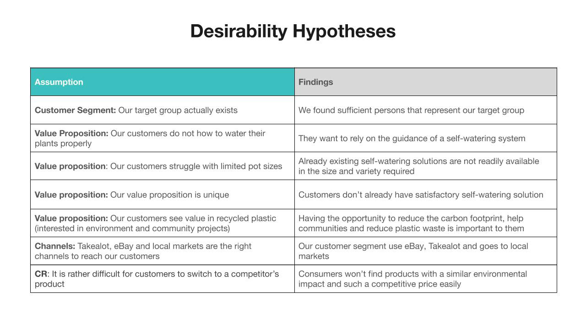
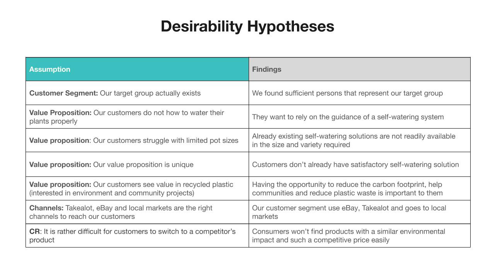

CIRCULAR ECONOMY WINNER
I participated in a 48-hour virtual hackathon where ideas were pitched, teams formed, and prototypes built based on the plasticpreneur circular plastics challenge.
Communication tool: Meetings and mentoring via Zoom
Coordination tools: Slack and Trello
Collaboration tool: Sprintbase
From plastic waste to value
THE CHALLENGE
How might we design something useful and create opportunities from recycling through a viable business model?
THE SCHEDULE

So, just how are current behaviours and attitudes impacting the situation?
With the unintended consequence of tackling an environmental problem, scores of young unemployed people in the pursuit of making money, have taken to waste-picking in suburbs of South Africa in order to survive. How do we now align our attitudes towards waste management to further impact on the waste-recycling value chain?
PROBLEMS FOUND
- A weak recycling culture and awareness accounts for only 12% of urban recycling and 3% of rural household recycling.
- 28% of households are at risk of hunger and 26% already experiencing food security risk.
- Water scarcity poses an ongoing national crisis with rolling year-on-year droughts.
OPPORTUNITIES IDENTIFIED
- Raising recycling awareness in schools so that students are the catalysts and drivers for behavioural change.
- Water-saving methods taught in schools already gained traction towards growing your own food.
- Plasticpreneur machine has impacted positively on waste-recycling, employment and food security.
USER PERSONAS
Based on the problem at hand, research and insights, we identified three personas.
- One that creates an informal opportunity to move waste material from suburbs (Persona 1),
- One that advocates responsible purchase, use and disposal of materials (Persona 2), and
- One has the ability to change behaviours and be a catalyst for change (Persona 3).
 

Concept
As one critical requirement for the circular economy is to work is working with communities, we conceptualised a water-saving plant pot that would create vital touch points in our business model to shift behaviors via schools and colleges.
This addresses educational, employment, food security and environmental issues.
Value Proposition
Our self-watering planter pot helps schools and communities, who want to create opportunities through skills and training, by upcycling waste projects, unlike conventional curriculums that lack the social impact needed to change attitudes and behaviours.
Design and prototype
3D DRAWINGS AND PRINTING
Using 3D software, a first geomteric and rectangular plant pot was developed. We then moved towards circular design mostly because of the constraints and limitations of the plastic molding machine. With guidance from the plasticpreneur team, our designed evolved into one that we felt was best suited for the process and improved to accomodated both the amount of water required for the amount of plant that could be sustained. We are now in the final stages of understanding how our mold can be designed for durability and high quality finishes.